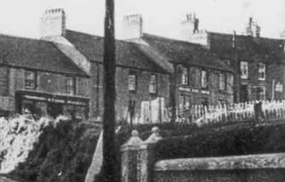

Llys Gwylim – The Bank
In the 1901 census, Evan Sidney Morris, a minister lived here. In the 1940s, a clerk from Pwllheli, came to Llithfaen, once a week, to the front room of Llys Gwilym to run a bank, a branch of Midland. In the 1950s the bank opened for either a day or an afternoon.
Census Facts:
In the 1940s, someone from town used to come up to the front room of Llys Gwilym to run a Midland bank.